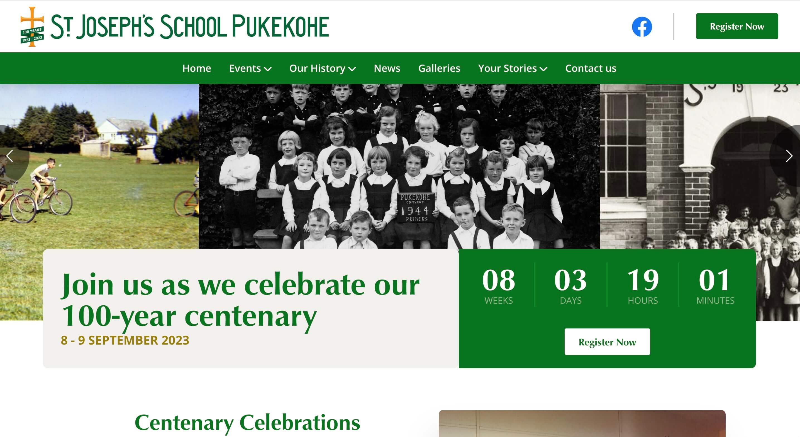
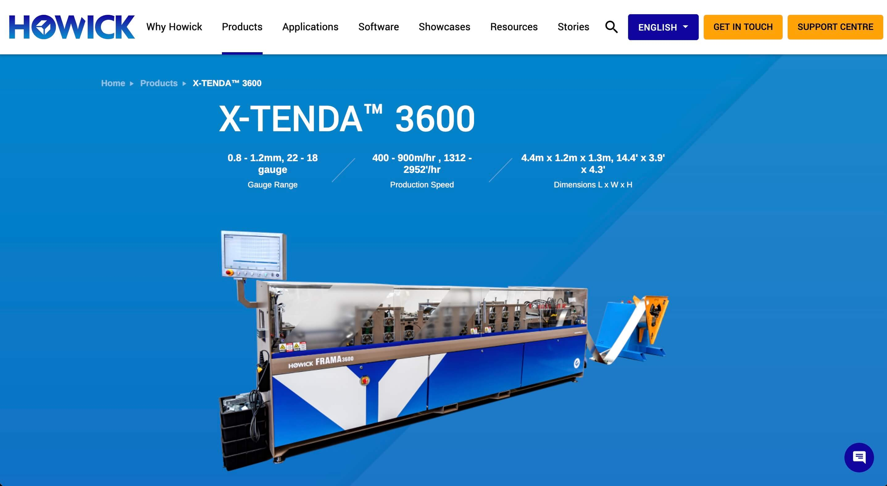
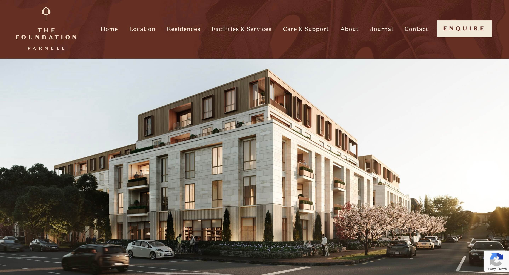
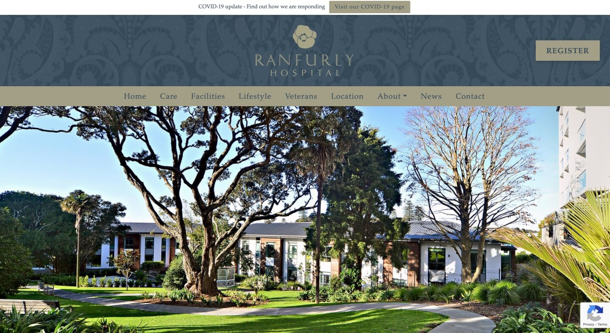
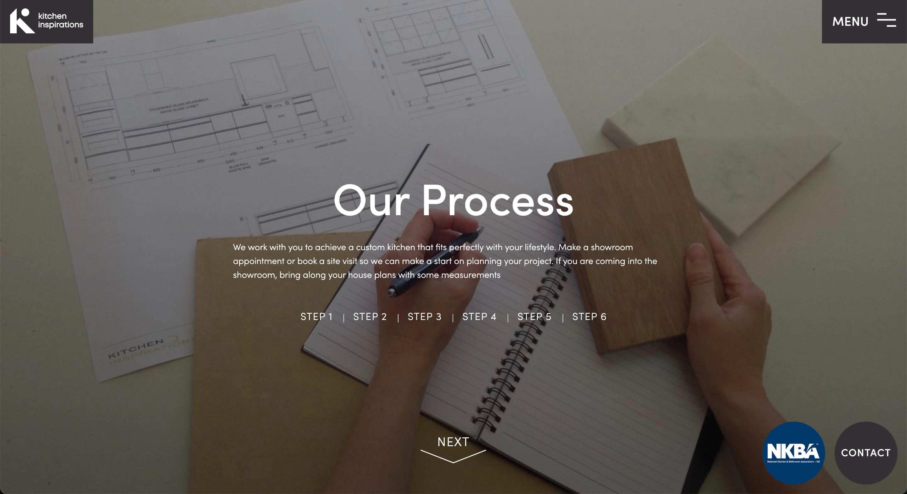

Crafting Digital Experiences:
Portfolio of a Coffee-fueled Web Developer
Hello and welcome, to my portfolio. I'm here to showcase my passion for crafting engaging and user-friendly websites. Fueling my creativity is a love for coffee, which keeps me energized and focused on my coding sessions. When I'm not immersed in the world of web development, you can find me roller skate jamming, enjoying the freedom and agility it brings. Additionally, as a gamer, I draw inspiration from the immersive experiences and innovative designs found in the gaming world. I invite you to explore my portfolio and discover how my unique blend of skills can bring your digital projects to life.
Recent Work

St Joseph Centennary
In my role as a web developer, I have been responsible for coding HTML and CSS layouts using the Bootstrap framework, as well as leveraging the power of LESS/SASS/SCSS preprocessors to enhance efficiency and maintainability. Using my expertise, I have consistently delivered high-quality web layouts and seamlessly integrated functionalities. My ability to adapt these technologies to meet the unique needs of each project showcases my versatility as a web developer and my commitment to providing outstanding user experiences. Visit the website here
Staircase
In addition, I have taken on the responsibility of setting up the CMS (Content Management System) and web frameworks for new and updated projects. This crucial task involves configuring the CMS and establishing the foundation for efficient content management and website development. I emphasize usability and user-friendliness, ensuring that the CMS and web framework provide an intuitive and streamlined experience for content editors and developers alike. I conduct thorough testing to ensure proper functionality and compatibility across different devices and browsers.

Howick Ltd
As a web developer, one of my key responsibilities has been providing support and resolving issues for various existing websites. I have demonstrated a strong ability to troubleshoot and diagnose problems efficiently, ensuring that websites are running smoothly and effectively meeting their intended purposes. Whether it's fixing broken functionality, resolving compatibility issues, or addressing user experience concerns, I take a proactive approach in identifying and rectifying bugs.

The Foundation Village
In addition to frontend development, I have integrated standard JavaScript modules, such as jQuery or Vue.js, into my projects. This integration allows me to create interactive and dynamic elements that enhance user engagement and meet the specific requirements of each project. I take pride in customizing these modules to align perfectly with the project's goals, ensuring a tailored and optimized user experience.

Ranfurly Hospital
have taken on the responsibility of populating websites with content and creating CSS styles that are specific to the site's needs. This involves working closely with content admin, designer, and clients to ensure that the website's content is accurately and effectively represented. I understand the importance of presenting content in a visually appealing and engaging manner. By applying responsive design principles, I make certain that the content looks great on various devices and screen sizes.

Kitchen Inspirations
In addition, I have experience working with MySQL databases, including modifying table structures, creating migrations, and performing necessary optimizations to ensure efficient data storage and retrieval. To meet the unique requirements of each project, I've modified or extended base PHP functions. This customization allows me to create bespoke solutions and deliver tailored experiences for clients.
{kind=link}
{kind=link}
{kind=link}
{kind=link}
{kind=link}
{kind=link}